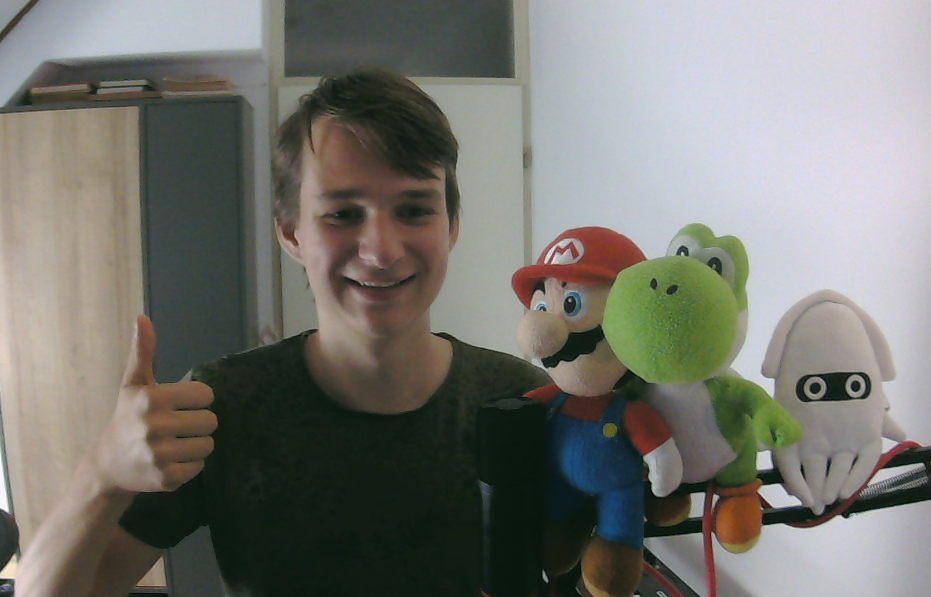

Me

Hi and welcome to my website, I'm Gerben Prins working towards becoming a game developer.
I live in the Netherlands close to Amsterdam where I right now study game development/programming.
Video Games have always cought my attention and I've always wanted to be able to make them. Because of
this I am trying to learn how to develop games myself and am I interested in pretty much every aspect
of the game development proces.
Next to game Programming I also try and learn pixel art (mostly in Neon or Post Apocalyptic style) and Game music/atmosphere.
because I want to learn more about other perspectives of game development as well.
Because of my interest in more aspects of game development I do prefer working in small teams or small companies because
I most likely get more opertunities to work on many different things instead of heaving to do the same process of work
over and over again.